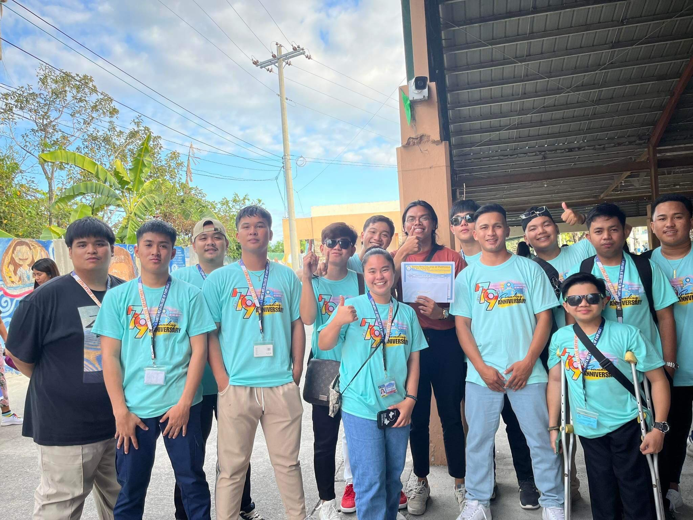

BSIS-2A
The number one benefit of information system is that it empowers people to do what they want to do. It lets people be creative. It lets people be productive. It lets people learn things they didn't think they could learn before, and so in a sense it is all about potential.
